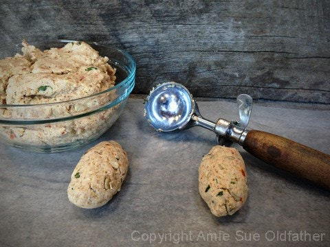
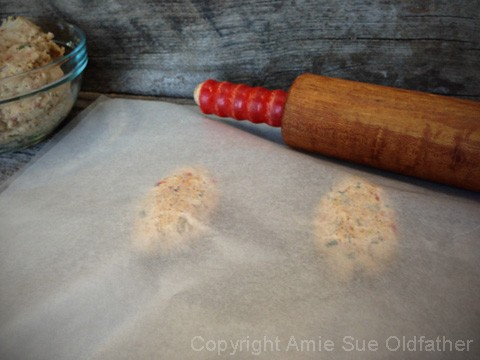
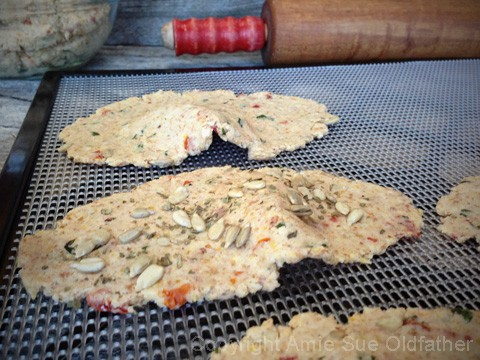

Thin Crust Pizza Flatbread

~ raw, vegan, gluten-free, paleo ~
There is no getting around the truth of the matter, I have been on a flatbread kick. Mainly because my loving husband is requesting them daily! And I do love to creating exotic foods for him; it gives me a sense of challenge… what new flavor will I make today?
The day I created this recipe, and from the moment I took a bite, I was singing the pizza song and trust me, I can belt out a tune (maybe not IN tune, but a tune!) For the base of the flatbread, I used the almond pulp.
Over the years, I have used a lot of ground nuts as a base, but often found with crackers, they tend to be a little on the denser and more substantial side.
Not that there is anything wrong with that, there are times when those textures are what is desired. But we have come to like the light texture that a nut pulp can offer.
Also, the mix of fresh and dried tomatoes are what gives this flatbread its real depth of flavor and complexity. I recommend using sun-dried tomatoes that are not soaked in oil.
Below is step by step photos on how I create the flatbread effect. The dough in these pictures is from another flatbread, but the technique is the same.
Ingredients:
yields roughly 18
Flatbreads:
- 2 1/2 cups halved cherry tomatoes
- 1/2 cup sun-dried tomatoes, rehydrated
- 2 Tbsp cold-pressed olive oil
- 1 clove garlic
- 2 tsp dried oregano
- 2 tsp dried basil
- 2 tsp raw agave nectar or maple syrup
- 1 tsp Himalayan pink salt
- 4 cups almond pulp
- 1/2 cup ground flax seeds
Toppings:
- Black and white sesame seeds
- sunflower seeds
- coarse sea salt
- dried parsley
Preparation:
- Rehydrate the sun-dried tomatoes in enough hot water to cover them, set aside for 15 minutes or until soft.
- Once done, drain the soak water and squeeze out the excess water.
- In the food processor fitted with the “S” blade, combine the cherry tomatoes, sun-dried tomatoes, olive oil, garlic, oregano, basil, sweetener, and salt.
- Process until it resembles a sauce.
- Pour into a medium-sized bowl.
- To make Paleo, remove the sweetener.
- Add the almond pulp and flax. With your hands, mix everything well.
- To create the flatbreads, use about 2 Tbsp worth of dough.
- Roll into an oval shape and place it on the teflex sheet that comes with the dehydrator or on parchment paper. I do two at a time.
- Cover with another sheet and with a rolling pin, use even pressure to press them out to a flatbread shape.
- They should be reasonably thin, no more than 1/4″ thick.
- See the photos below on how to transfer the flatbread from the teflex to your hand, to the mesh sheet.
- Leave the flatbreads plain or sprinkle the extra topping on top. After sprinkling them on, with the palm of your hand, lightly press them into the dough.
- Sprinkle coarse sea salt on top before dehydrating.
- Dehydrate at 145 degrees for 1 hour then reduce 115 (F) degrees for 6-10 hours or until dry.
- These should last several weeks in an airtight container. If they start to moisten a bit, return them to the dehydrator and dry until they firm back up.
The Institute of Culinary Ingredients™
- To learn more about maple syrup by clicking (here).
- Click (here) for my thoughts on raw agave nectar.
- What is Himalayan pink salt, and does it matter? Click (here) to read more about it.
Culinary Explanations:
- Why do I start the dehydrator at 145 degrees (F)? Click (here) to learn the reason behind this.
- When working with fresh ingredients, it is essential to taste test as you build a recipe. Learn why (here).
- Don’t own a dehydrator? Learn how to use your oven (here). I do, however honestly believe that it is a worthwhile investment. Click (here) to learn what I use.

I found that rolling two at a time was perfect; any more is just too complicated.

Cover the dough balls with another sheet of teflex or parchment paper and roll out
lightly with a rolling pin. You can use your hand too if you don’t own a rolling pin.

Peel the top layer back, exposing the flatbreads.

Place your hand on top of one of the breads and turn it over into your palm.
As shown below. This may seem awkward, but you will get the hang of it.

Once the dough is resting in the palm of your hand, peel the paper off.

Hand cupping… this is my artistic side coming out. With the dough in your hand
cup your palm a little, creating an irregular shape.

Hold the shape in your hand, and while turning your hand over, place the dough on the dehydrator sheet.
The objective of this is to create what seems like air pockets and curling edges that
would appear in cooked flatbreads. This technique is entirely optional, but it takes
the raw flatbread to a new level of fun when all is said and done.


© AmieSue.com